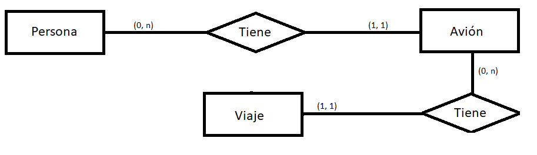

Definición del modelo entidad relación
Modelo entidad relación
El modelo entidad relación, es una herramienta que permite plasmar la estructura de datos de un sistema de información y de esta manera conocer cada uno de sus objetos como entidades, propiedades y relaciones que la conforman. El modelo entidad relación, da razón del alcance que puede tener un sistema, pues este respalda la forma y la arquitectura de los datos, la relación de las entidades y su respectiva cardinalidad.
El modelo entidad relación es demasiado importante en la estructuración de un sistema de información, ya que de él, depende el óptimo nivel de consultas, transacciones, mantenibilidad y otras características que permitirán llevar a un adecuado consumo de recursos y por lo tanto de costos.
El modelo entidad relación se representa por medio de distintos tipos de figuras, las cuales conforman un diagrama. A continuación se muestra un ejemplo:
En las siguientes secciones se explicará cada uno de los elementos que componen el modelo.